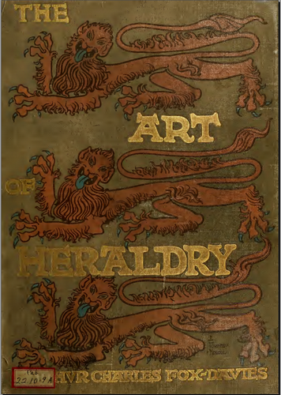

The Art of Heraldry - An Encyclopaedia of Armory by A.C. FOX-DAVIES, TC and EC Jack, London 1904
This is a beautiful visual source book of Heraldic art, with more than 150 full page plates and 1200 other figures, all clearly and crisply reproduced, especially the many colour plates. Fully text searchable with OCR accuracy of 98%+.
Contents as follows (Numbers are PDF page numbers)
Introduction 9 Origins of Heraldry 13 Heraldry and Numismatics 22 Status & Meanings 25 Heralds & Officers of Arms 28 Heraldic Effigies 52 Heraldic Brasses 57 Wearing of Arms 60 Components 67 The Shield 68 Field and Tincture 79 Rules of Blazon 104 Ordinaries and Sub-Ordinaries 110 The Human Figure 187 The Lion 207 Beasts 227 Monsters 262 Birds 274 Fish 307 Reptiles 312 Insects 314 Trees etc. 317 Objects 348 Helmet 399 Crest 424 Crowns 440 Coronets 467 Mantling 486 Wreath 498 Supporters 502 The Compartment 542 Mottoes 547 Badges 551 Flags 563 Cadency 568 Bastardy 593 Marshalling 603 Knighthood 637 Ladies 647 Offiical Insignia 652 Augmentations 658 The Union Jack 665 Heraldic Artistic Development 673 Ecclesiastical Heraldry 729 Dominions 736 Towns 738 Societies and Companies 742 Armorial Manuscripts of Scotland 756 Modern English Heraldic Art 765 Living Heraldic Artists 768 Hatchments and Funeral Slabs 785 Seize Quartiers 797 Heraldic Illumination 802 Index 808 Index of Names 812
NOTES: Plate descriptions are scattered through the text, I suggest using text search to find them.